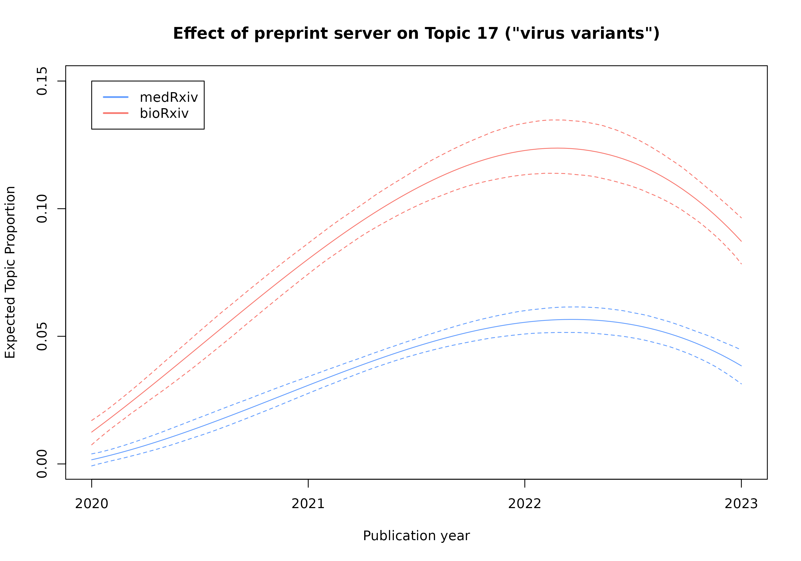

Example 1: Topic modelling Covid preprints
Source:vignettes/covid-preprint-topics.Rmd
covid-preprint-topics.RmdIntroduction
This is an example topic modelling analysis using the Structural Topic Model (STM) (Roberts, Stewart, and Tingley 2019) to explore a subset of bioRxiv and medRxiv preprints covering research related to Covid-19. The medRxiv website actually provides access to a dedicated collection of preprints on both medRxix and bioRxiv covering COVID-19 SARS-CoV-2. Here we will however work with the whole preprint collection and create a subset using keyword matching.
This document assumes some familiarity with Structural Topic
Modeling (STM). Please consult the stm package
vignette (Roberts, Stewart, and Tingley 2019) for
background.
Getting the document data
The bioRxiv and medRxiv servers provide API access to retrieve
preprint meta-data. One option to access the API is to use the
[medrxivr](https://docs.ropensci.org/medrxivr/) package.
The code snippet below would for example collect all bioRxiv
preprint meta-data for the year 2015.
library(medrxivr)
biorxiv_raw <- mx_api_content(server = "biorxiv",
from_date = "2015-12-01",
to_date = "2015-12-31")This package has been setup to support exploring different thematic
preprint subsets and assumes usage of all preprints from both servers
published from 2013 to 2023. This data can not be shared in this package
as the usage and API terms of
bioRxiv/medRxiv do not permit redistribution and rehosting of
the complete data; therefore this package provides scripts to
collect and clean the data in order to replicate this analysis (check
/data-raw in the package repository).
The documented examples assume that you have obtained the data yourself and created a local copy for replication of the analyses. Below is the code that would allow you to do this. NOTE that at the time of writing this returned a dataset with 365526 records. Retrieving this data would take several hours. When replicating an analysis like this use the bioRxiv/medRxiv API responsibly. Consider collecting smaller datasets (the example shown below would for example only require preprints from 2020 to 2023). Alternatively, use the bulk snapshot as detailed here.
library(dplyr)
library(medrxivr)
# get publications from medRxiv and bioRxiv
pubs_biorxiv_raw <- medrxivr::mx_api_content(server = "biorxiv",
#from_date = "2019-01-01",
to_date = "2023-12-31")
pubs_medrxiv_raw <- medrxivr::mx_api_content(server = "medrxiv",
#from_date = "2019-01-01",
to_date = "2023-12-31")
pubs_biorxiv_raw <- pubs_biorxiv_raw %>%
mutate(server = "biorxiv")
pubs_medrxiv_raw <- pubs_medrxiv_raw %>%
mutate(server = "medrxiv")
preprints_raw <- dplyr::bind_rows(pubs_biorxiv_raw, pubs_medrxiv_raw)
save(preprints_raw, file = "./data-raw/preprints_raw.Rdata")In addition to the 15 meta-data variables returned via the API the
code above adds server as a variable to indicate the origin
of the preprint. This is an important variable for the examples shown
below.
Cleaning, filtering and annotating the data
As a first step the raw preprint data has to be cleaned.
Specifically, we want to retain only one unique record per preprint,
multiple versions for each unique doi may
exist. Below we retain only the latest version per doi and also ensure
that there are no duplicate dois. This is crucial as we
need a unique identifier for each document that we want to include in
the topic modelling.
library(dplyr)
preprints_cleaned <- preprints_raw %>%
group_by(doi) %>%
filter(version == max(version)) %>%
ungroup() %>%
distinct(doi, .keep_all = TRUE)Next we annotate the data with additional variables, specifically we
want to reduce the publication date to the publication
year, and add an additional variable
is_published, which is inferred from the
published variable. The latter provides the DOI of
the journal where the preprint has been published after peer review. We
also limit the data to preprints from 2020 to 2023 (for an analysis of
Covid topics preprints prior to 2020 are not relevant), and only retain
variables that we may want to explore as document covariates,
i.e. document propereties that potentially influence the prevalence of
topics.
preprints <- preprints_cleaned %>%
mutate(published = stringr::str_trim(published)) %>%
mutate(published = na_if(published, "NA")) %>%
mutate(is_published = as.numeric(!is.na(published))) %>%
mutate(is_published = case_when(is_published == 1 ~ "published",
is_published == 0 ~ "not published",
TRUE ~ "undefined")) %>%
mutate(year = lubridate::year(date)) %>%
filter(year >= 2020 & year <= 2023) %>%
select(doi, server, title, abstract, date, year, version, is_published)Finally, we define keywords and reduce our preprint set to preprints that contain one of those keywords in either the title or abstract, resulting in a subset of 29692 publications.
library(stringr)
keywords <- c("sars-cov", "covid")
search_pattern <- stringr::regex(paste(keywords, collapse = "|"),
ignore_case = TRUE)
covid_preprints <- preprints %>%
filter(stringr::str_detect(title, pattern = search_pattern) |
stringr::str_detect(abstract, pattern = search_pattern))Preparing and preprocessing the documents for text analysis
In order to analyze the preprints with the stm package we
need to create a representation of the documents and document meta-data
that stm can utilize. stm offers built-in
methods to support this (see specifically the
textProcessor() and prepDocuments() methods
(Roberts, Stewart, and Tingley 2019)).
Here we use instead the quanteda package
(Benoit et al. 2018) which provides a
broad range of methods for text pre-processing and analysis, creating
formats also supported by stm.
Create a corpus
First, we create a corpus object from the dataframe of preprints. The corpus is essentially a library of documents that will be used for the next steps. It specifies which variable should be used to uniquely identify documents and which variable holds the textual content (here the preprint abstracts) that should be processed.
Echoing the corpus will provide some basic information. All other variables in the original dataframe will be interpreted and included as document metadata (‘docvars’), which could later be included in the STM topic modelling process.
Tokenize and preprocess
For further analysis the corpus documents have to be
tokenized, i.e. further processing the texts have to be
broken into semantic units that are relevant for our analysis. The most
common approach is to interpret each word (typically designated
by whitespaces or punctuation) as a token. This is applied here as well.
quanteda offers several alternative approaches. Instead of
individual words sequences of words (n-grams) could for example
be used.
The tokenization method also provides several options for preprocessing and filtering the tokens. Here for example while tokenizing we will simultaneously remove punctuation, numbers, special symbols and URLs. Furthermore, we split words containing hyphens, a word like social-ecological will thus be split into two individual tokens (social and ecological).
The text preprocessing choices could strongly influence the results of a text analysis (Denny and Spirling 2018) and should be thouroughly explained, carefully evaluated and ideally be based on theory.
Create a Document-feature matrix
The tokens object is then used to create a
document-feature matrix. For further statistical analysis this
reduces the tokens to a matrix of documents (rows) and unique
terms (columns) that counts the number of occurrences
for each term in each document. quanteda captures this as
features which supports more general options than
terms (see the quanteda documentation for
details).
Filter terms and documents
This is followed by other (optional) processing and filtering steps. A common option for example — to reduce the size of the data or assist in the interpretation — is the removal of so-called stopwords (e.g. “the”, “and”, “or” etc).
A step omitted here is reducing words (terms) to their word stem. The stemming algorithm (several are available) reduces words to its word stem. The terms “universal”, “university” and “universe” would for example be reduced to the same word stem of “univers”; this example indicates that this approach may require careful consideration.
Stemming has the advantage that it could potentially reduce the size of the matrix substantially.
pubs_dfm <- pubs_dfm %>%
quanteda::dfm_remove(pattern = quanteda::stopwords("english")) #%>%
#quanteda::dfm_wordstem()# echo the result
> pubs_dfm
Document-feature matrix of: 29,692 documents, 82,472 features (99.87% sparse) and 6 docvars.
features
docs nitric oxide synthesised three isoforms synthases viz nnos neurons enos
10.1101/038398 6 6 1 1 1 1 1 1 2 1
10.1101/058511 0 0 0 0 0 0 0 0 0 0
10.1101/292979 0 0 0 2 0 0 0 0 0 0
10.1101/402370 0 0 0 0 0 0 0 0 0 0
10.1101/420737 0 0 0 0 0 0 0 0 0 0
10.1101/596700 0 0 0 0 0 0 0 0 0 0
[ reached max_ndoc ... 29,686 more documents, reached max_nfeat ... 82,462 more features ]Further options may be considered to reduce noise and/or the size of the matrix. The following code removes for example terms (or features) that consist only of one character, terms that do not appear in at least two different documents, and furthermore would remove documents that do not contain at least 5 tokens. In our example this drops one document and reduces the number of retained features by more than half.
pubs_dfm <- pubs_dfm %>%
quanteda::dfm_remove(min_nchar = 2) %>%
quanteda::dfm_trim(min_docfreq = 2, docfreq_type = "count") %>%
quanteda::dfm_subset(quanteda::ntoken(.) > 4)# echo the result
> pubs_dfm
Document-feature matrix of: 29,691 documents, 37,093 features (99.72% sparse) and 6 docvars.
features
docs nitric oxide synthesised three isoforms synthases viz neurons enos endothelial
10.1101/038398 6 6 1 1 1 1 1 2 1 2
10.1101/058511 0 0 0 0 0 0 0 0 0 0
10.1101/292979 0 0 0 2 0 0 0 0 0 0
10.1101/402370 0 0 0 0 0 0 0 0 0 0
10.1101/420737 0 0 0 0 0 0 0 0 0 0
10.1101/596700 0 0 0 0 0 0 0 0 0 0
[ reached max_ndoc ... 29,685 more documents, reached max_nfeat ... 37,083 more features ]Topic modeling
Fitting the STM topic model
The key input is the number of topics (K) that the model
should be fit to, which we here set to 20 (see the separate document for
a discussion on suitable choices for the number of topics).
Before fitting the topic model we convert the document-feature matrix
into the native STM format. In order to fit a topic model with the
stm() function we need the set of documents,
the vocabulary of which these documents are composed and a
dataframe specifying the values of all document meta-data variables
(data) which can be used in the process as “covariates”
that might influence the prevalence of topics in a document.
Here, in the example below, we ask stm to consider the
origin of the document (server) and the publication
year when fitting the topic model. The argument
prevalence = ~ server * s(year) expresses that we assume
that the prevalence of topics in a document is influenced by these two
variables, and that they also interact, i.e. we work with the hypothesis
that different temporal trends could be expected for documents published
on either of the two preprint servers1.
The consideration of covariates is optional. If omitted the model reduces to a Correlated Topic Model (Blei and Lafferty 2007; Roberts, Stewart, and Tingley 2019).
We also supply a seed, which allows to replicate the
results of the topic modeling.
Estimating the effect of document covariates
Once the model has converged we can estimate the effect of document
covariates on the topic prevalence. The estimateEffect()
function allows to run regressions based on the formula specified as the
first argument. It is here identical to the formula used when fitting
the topic model, and regressions are run for all 20 topics. The same
metadata as used previously needs to be supplied for this function in
addition to the topic model object.
covid_effect_K20 <- estimateEffect(1:20 ~ server * s(year),
stmobj = covid_model_K20,
metadata = covid_stm_docs$meta)This concludes fitting the model. The following sections step through a sample exploration of this topic model.
Analysing and interpreting the topic model
Basic topic model information
The topic model is defined by two matrices that capture probability
distributions of topics over documents (gamma matrix) and words
(or terms) over topics (beta matrix). We can start exploring
these with some of the built-in functions of stm.
The plot() function plots a chart showing topic
proportions for all topics in the model. A topic is identified by a
unique ID (1-20) and in the plot below the five words (or terms) that
have the highest probability of being associated with the given topic.
This gives an early indication of the distinct latent topics in the
analysed subset of preprints.
plot(covid_model_K20, n = 5)
The summary() function provides a more detailed view of
the topics and can help to begin interpreting and labeling the 20
topics. Specifically, the output shows four different sets of words
associated with a topic. ‘Highest Prob’ lists the words that
have the highest probability of being associated with a topic. A
comparison of different topics highlights that a term such as
covid has a high probability for several topics. The list of
‘FREX’ words summarizes words that are frequent and exclusive
in a topic, i.e. characterize a topic in comparison to other topics
(consult stm::labelTopics() for details as well as
Lift and Score word sets).
summary(covid_model_K20)
># A topic model with 20 topics, 29691 documents and a 37093 word dictionary.
># Topic 1 Top Words:
># Highest Prob: model, can, covid, transmission, epidemic, data, disease
># FREX: npis, mathematical, compartmental, scenarios, seir, reproduction, sir
># Lift: 1we, abms, ao_scplowbstractc_scplowas, apt, artefact, asilv, asymptotically
># Score: distancing, social, epidemic, reproduction, npis, model, r0
># Topic 2 Top Words:
># Highest Prob: cov, sars, drug, antiviral, activity, drugs, covid
># FREX: src, figdir, o_linksmallfig, c_fig, m_fig, o_fig, gif
># Lift: k777, gif, pmmov, wwtps, 13k, 17k, 18k
># Score: mpro, antiviral, drug, inhibitors, protease, drugs, compounds
># Topic 3 Top Words:
># Highest Prob: covid, risk, age, mortality, ci, associated, years
># FREX: hispanic, ethnicity, pregnant, racial, black, smoking, preterm
># Lift: 65s, asmr, assault, backgroundethnic, backgroundracial, backgroundsocio, brunt
># Score: ci, age, women, mortality, ethnicity, aor, hispanic
># Topic 4 Top Words:
># Highest Prob: covid, health, pandemic, mental, social, study, survey
># FREX: loneliness, emotional, attitude, depression, insecurity, mental, anxiety
># Lift: insecurity, accelerometers, amhara, angry, anovas, asd, asleep
># Score: mental, anxiety, depression, respondents, social, psychological, students
># Topic 5 Top Words:
># Highest Prob: sars, cov, infection, testing, transmission, cases, children
># FREX: ifr, seroprevalence, schools, school, contacts, household, attack
># Lift: inmates, 19y, 35y, 39y, 9a, abidjan, addscovid
># Score: school, seroprevalence, children, schools, household, transmission, testing
># Topic 6 Top Words:
># Highest Prob: cov, sars, virus, viral, coronavirus, respiratory, infection
># FREX: bats, cats, deer, animals, covs, wildlife, hcov
># Lift: cats, 5x106, aav6, aegyptiacus, aethiops, affinis, agm
># Score: cov, sars, mice, rna, viruses, coronaviruses, animals
># Topic 7 Top Words:
># Highest Prob: patients, covid, hospital, disease, clinical, severe, admission
># FREX: acei, admission, arbs, admitted, icu, aki, aceis
># Lift: 1.1x109, 2020r1g1a1a01006229, 2l, 4.0x109, 40y, ahmad, ahrq
># Score: patients, admission, icu, hospital, admitted, ci, hospitalized
># Topic 8 Top Words:
># Highest Prob: covid, cases, countries, number, deaths, data, pandemic
># FREX: cfr, italy, cities, country, countries, fatality, china
># Lift: 1000m, 1th, 55th, abysmally, abyss, adhanom, adminstat
># Score: countries, cases, lockdown, deaths, country, cfr, daily
># Topic 9 Top Words:
># Highest Prob: protein, binding, spike, sars, cov, ace2, rbd
># FREX: conformational, cryo, conformation, glycans, conformations, nanobodies, residues
># Lift: 13c, 6lzg, 6m0j, 6vw1, 6vxx, aabpu, abdab
># Score: binding, rbd, protein, spike, ace2, proteins, epitopes
># Topic 10 Top Words:
># Highest Prob: data, can, learning, covid, using, model, based
># FREX: aerosol, n95, aerosols, respirators, decontamination, airborne, machine
># Lift: elastomeric, forehead, papr, radiomics, exhaled, singing, 0.3m
># Score: learning, masks, aerosol, machine, respirators, n95, mask
># Topic 11 Top Words:
># Highest Prob: vaccine, vaccination, covid, middle, vaccines, dot, dose
># FREX: hesitancy, dot, vaccinate, middle, hesitant, rollout, ve
># Lift: #949850, acceptant, adjrr, aesis, amparo, analysesthe, andersen
># Score: vaccination, vaccine, dot, booster, dose, vaccinated, middle
># Topic 12 Top Words:
># Highest Prob: studies, care, covid, health, research, data, pandemic
># FREX: reviews, telemedicine, preprints, scoping, articles, blacksquare, publications
># Lift: preprints, 1.2m, aas, abbreviating, accustomed, activists, advisor
># Score: review, care, services, articles, reviews, pubmed, service
># Topic 13 Top Words:
># Highest Prob: sars, cov, genome, mutations, sequencing, viral, variants
># FREX: phylogenetic, gisaid, clades, wgs, genomes, genomic, haplotype
># Lift: clades, snvs, 1.1.7s, 11083g, 14408c, 17del, 20a
># Score: mutations, genome, wastewater, genomes, sequences, sequencing, genomic
># Topic 14 Top Words:
># Highest Prob: cells, cell, sars, cov, expression, infection, ace2
># FREX: autophagy, mirnas, mirna, at2, ifns, ciliated, scrna
># Lift: 25hc, angiotensinogen, antagonizes, apcs, arf6, asgr1, at2s
># Score: cells, expression, ace2, cell, genes, epithelial, tmprss2
># Topic 15 Top Words:
># Highest Prob: antibody, sars, cov, antibodies, igg, responses, vaccine
># FREX: iga, bau, igg, humoral, immunogenicity, as03, reactogenicity
># Lift: 1x1011, 28d, 30ug, ad26cov2, addas03, adhu5, atellica
># Score: igg, antibody, antibodies, neutralizing, rbd, vaccine, spike
># Topic 16 Top Words:
># Highest Prob: sars, cov, pcr, samples, rt, test, testing
># FREX: ag, rdt, rdts, lod, rt, panbio, kits
># Lift: poct, cobas, panbio, #yomecorono, 1.6x104, 10min, 15min
># Score: rt, pcr, assay, samples, saliva, detection, assays
># Topic 17 Top Words:
># Highest Prob: variants, omicron, variant, delta, ba, cov, sars
># FREX: omicron, ba, xbb, subvariants, delta, bq, voc
># Lift: 1.5s, 129s2, 1f11, 2.86s, 3b8, 417n, 75d30121c11061
># Score: omicron, ba, variants, variant, delta, mutations, voc
># Topic 18 Top Words:
># Highest Prob: covid, patients, disease, severe, immune, inflammatory, associated
># FREX: autoantibodies, ipf, balf, neutrophils, il, fibrosis, autoantibody
># Lift: 18f, 24hr, a2ar, aab, actinobacteria, activin, adiponectin
># Score: inflammatory, il, patients, cytokine, inflammation, cytokines, endothelial
># Topic 19 Top Words:
># Highest Prob: patients, treatment, covid, group, days, day, trial
># FREX: placebo, randomized, hcq, soc, azithromycin, arm, tocilizumab
># Lift: 200mg, 400mg, 500mg, 600mg, 800mg, aureobasidium, ayush
># Score: placebo, hcq, trial, patients, randomized, tocilizumab, hydroxychloroquine
># Topic 20 Top Words:
># Highest Prob: covid, symptoms, long, workers, infection, participants, study
># FREX: hcws, taste, smell, hcw, fatigue, workers, headache
># Lift: chemesthetic, dirty, eyewear, firefighters, ohs, principality, psychophysical
># Score: symptoms, hcws, workers, participants, symptom, hcw, fatigueTopic-document and term-topic distributions
As mentioned, the topic model is defined by the gamma
(distribution of topics over words) and beta (distribution of
terms over topics) matrices. With the help of the tidytext
package we can extract those into dataframes for a more detailed
analysis. Each row in the resulting dataframes lists the probability
(gamma) of a given topic occurring in a given
document2.
># Rows: 593,820
># Columns: 3
># $ document
[3m
[38;5;246m<int>
[39m
[23m 1, 2, 3, 4, 5, 6, 7, 8, 9, 10, 11, 12, 13, 14, 15, 16, 17, 18…
># $ topic
[3m
[38;5;246m<int>
[39m
[23m 1, 1, 1, 1, 1, 1, 1, 1, 1, 1, 1, 1, 1, 1, 1, 1, 1, 1, 1, 1, 1…
># $ gamma
[3m
[38;5;246m<dbl>
[39m
[23m 0.001283143, 0.003547179, 0.003745510, 0.005495076, 0.0630417…Similarly, the beta matrix (extracted into a dataframe)
lists for each row the probability (beta) of a given
term occurring in a given topic.
># Rows: 741,860
># Columns: 3
># $ topic
[3m
[38;5;246m<int>
[39m
[23m 1, 2, 3, 4, 5, 6, 7, 8, 9, 10, 11, 12, 13, 14, 15, 16, 17, 18, 1…
># $ term
[3m
[38;5;246m<chr>
[39m
[23m "#1", "#1", "#1", "#1", "#1", "#1", "#1", "#1", "#1", "#1", "#1"…
># $ beta
[3m
[38;5;246m<dbl>
[39m
[23m 1.874650e-112, 2.519509e-119, 1.248970e-118, 6.665355e-160, 3.21…Starting with the beta matrix we can create word clouds to explore useful semantic labels for each topic.
Understanding and labeling topics
As mentioned previously stm can use the word
probabilities to also compute FREX (frequent and exclusive)
words per topic. Those can be retrieved with the
stm::labelTopics() function, which returns ordered lists of
the different word sets characterizing a topic. We can combine the
information about high probability and FREX words to
create word clouds for each topic, which might help to assign a summary
label for each topic.
library(tidyr)
library(tibble)
# get the top FREX words
frex_top20 <- as.data.frame(labelTopics(covid_model_K20, n = 20)$frex) %>%
rownames_to_column(var = "topic") %>%
pivot_longer(starts_with("V"), values_to = "term") %>%
mutate(is_frex = 1) %>%
select(-name)
topic_words <- tidytext::tidy(covid_model_K20, matrix = "beta") %>%
#filter(!(term %in% c("sars", "cov", "covid"))) %>%
mutate(topic = as.character(topic)) %>%
group_by(topic) %>%
arrange(-beta) %>%
slice_head(n = 50) %>%
mutate(beta_norm = (beta - min(beta)) / (max(beta) - min(beta))) %>%
ungroup() %>%
left_join(frex_top20, by = c("topic", "term")) %>%
mutate(is_frex = ifelse(is.na(is_frex), "0", "1")) %>%
filter(!(term %in% c("sars", "cov", "covid"))) %>%
mutate(topic = paste("Topic", topic))
ggplot(topic_words, aes(label = term, size = beta_norm, color = is_frex)) +
ggwordcloud::geom_text_wordcloud_area(shape = "square",
rm_outside = TRUE) +
scale_radius(range = c(2, 13)) +
scale_color_manual(values = c("0" = "black", "1" = "#D55E00")) +
facet_wrap(~topic, ncol = 4)
Word clouds showing the 50 most probable terms per topic. Words are scaled by normalized probability per topic, terms that are also among the top 20 FREX terms are highlighted in orange. For readability, the terms ‘sars’, ‘cov’ and ‘covid’ have been removed as they occur with high probability in most topics.
From the review of this combination of FREX and high probability terms distinct topics are emerging, such as: “epidemic models” (Topic 1), “vaccines” (Topic 11), “testing” (Topic 16), “virus variants” (Topic 17), “treatments” (Topic 2), “mortality risks” (Topic 3), “mental health” (Topic 4), “country-wise case reports” (Topic 8), “virus molecular structure” (Topic 9).
Covariate effects
A key feature of STM is the incorporation of document covariates into
the topic model. In our example we considered the publication year and
the preprint server as covariates that might influence the prevalence of
a topic in a document. We also applied a regression for these covariates
to the fit model, which were extracted with
stm::estimateEffect().
As a first exploration we can print the regression tables for all or selected topics.
summary(covid_effect_K20)
>#
># Call:
># estimateEffect(formula = 1:20 ~ server * s(year), stmobj = covid_model_K20,
># metadata = covid_stm_docs$meta)
>#
>#
># Topic 1:
>#
># Coefficients:
># Estimate Std. Error t value Pr(>|t|)
># (Intercept) 0.0234605 0.0037019 6.337 2.37e-10 ***
># servermedrxiv 0.1239578 0.0042993 28.832 < 2e-16 ***
># s(year)1 -0.0018735 0.0145897 -0.128 0.898
># s(year)2 -0.0008877 0.0153820 -0.058 0.954
># s(year)3 0.0084582 0.0067620 1.251 0.211
># servermedrxiv:s(year)1 -0.0697073 0.0171601 -4.062 4.87e-05 ***
># servermedrxiv:s(year)2 -0.0963660 0.0189718 -5.079 3.81e-07 ***
># servermedrxiv:s(year)3 -0.0706277 0.0084948 -8.314 < 2e-16 ***
># ---
># Signif. codes: 0 '***' 0.001 '**' 0.01 '*' 0.05 '.' 0.1 ' ' 1
>#
>#
># Topic 2:
>#
># Coefficients:
># Estimate Std. Error t value Pr(>|t|)
># (Intercept) 0.098624 0.002871 34.350 < 2e-16 ***
># servermedrxiv -0.085903 0.003145 -27.318 < 2e-16 ***
># s(year)1 -0.019835 0.011344 -1.748 0.0804 .
># s(year)2 -0.011312 0.013528 -0.836 0.4031
># s(year)3 -0.028625 0.004545 -6.299 3.04e-10 ***
># servermedrxiv:s(year)1 0.021498 0.012602 1.706 0.0880 .
># servermedrxiv:s(year)2 0.008334 0.014628 0.570 0.5689
># servermedrxiv:s(year)3 0.030397 0.005332 5.701 1.20e-08 ***
># ---
># Signif. codes: 0 '***' 0.001 '**' 0.01 '*' 0.05 '.' 0.1 ' ' 1
>#
>#
># Topic 3:
>#
># Coefficients:
># Estimate Std. Error t value Pr(>|t|)
># (Intercept) 0.011074 0.002811 3.940 8.17e-05 ***
># servermedrxiv 0.053958 0.003288 16.413 < 2e-16 ***
># s(year)1 -0.002474 0.011306 -0.219 0.827
># s(year)2 -0.002098 0.011868 -0.177 0.860
># s(year)3 0.001251 0.004861 0.257 0.797
># servermedrxiv:s(year)1 0.014900 0.013692 1.088 0.276
># servermedrxiv:s(year)2 0.014370 0.015044 0.955 0.340
># servermedrxiv:s(year)3 0.029775 0.006502 4.579 4.69e-06 ***
># ---
># Signif. codes: 0 '***' 0.001 '**' 0.01 '*' 0.05 '.' 0.1 ' ' 1
>#
>#
># Topic 4:
>#
># Coefficients:
># Estimate Std. Error t value Pr(>|t|)
># (Intercept) 0.008893 0.003299 2.695 0.00703 **
># servermedrxiv 0.057685 0.003868 14.913 < 2e-16 ***
># s(year)1 0.004637 0.013445 0.345 0.73019
># s(year)2 -0.005242 0.014094 -0.372 0.70997
># s(year)3 0.004555 0.005797 0.786 0.43206
># servermedrxiv:s(year)1 0.020486 0.016465 1.244 0.21344
># servermedrxiv:s(year)2 -0.003979 0.018070 -0.220 0.82573
># servermedrxiv:s(year)3 0.020231 0.007652 2.644 0.00820 **
># ---
># Signif. codes: 0 '***' 0.001 '**' 0.01 '*' 0.05 '.' 0.1 ' ' 1
>#
>#
># Topic 5:
>#
># Coefficients:
># Estimate Std. Error t value Pr(>|t|)
># (Intercept) 0.0049385 0.0023177 2.131 0.0331 *
># servermedrxiv 0.0542640 0.0027655 19.622 <2e-16 ***
># s(year)1 -0.0007016 0.0093405 -0.075 0.9401
># s(year)2 0.0001238 0.0099220 0.012 0.9900
># s(year)3 0.0011210 0.0041075 0.273 0.7849
># servermedrxiv:s(year)1 0.0260389 0.0114866 2.267 0.0234 *
># servermedrxiv:s(year)2 -0.0018066 0.0121668 -0.148 0.8820
># servermedrxiv:s(year)3 -0.0085430 0.0053452 -1.598 0.1100
># ---
># Signif. codes: 0 '***' 0.001 '**' 0.01 '*' 0.05 '.' 0.1 ' ' 1
>#
>#
># Topic 6:
>#
># Coefficients:
># Estimate Std. Error t value Pr(>|t|)
># (Intercept) 0.148605 0.003854 38.564 < 2e-16 ***
># servermedrxiv -0.115790 0.004205 -27.535 < 2e-16 ***
># s(year)1 -0.021048 0.013495 -1.560 0.1189
># s(year)2 -0.049191 0.012117 -4.060 4.93e-05 ***
># s(year)3 -0.043725 0.006059 -7.217 5.46e-13 ***
># servermedrxiv:s(year)1 0.005868 0.015087 0.389 0.6973
># servermedrxiv:s(year)2 0.035356 0.013822 2.558 0.0105 *
># servermedrxiv:s(year)3 0.031042 0.006954 4.464 8.09e-06 ***
># ---
># Signif. codes: 0 '***' 0.001 '**' 0.01 '*' 0.05 '.' 0.1 ' ' 1
>#
>#
># Topic 7:
>#
># Coefficients:
># Estimate Std. Error t value Pr(>|t|)
># (Intercept) 0.010677 0.002907 3.673 0.000240 ***
># servermedrxiv 0.086044 0.003450 24.939 < 2e-16 ***
># s(year)1 -0.004038 0.011544 -0.350 0.726472
># s(year)2 -0.007739 0.012172 -0.636 0.524943
># s(year)3 -0.003382 0.005210 -0.649 0.516205
># servermedrxiv:s(year)1 -0.049318 0.014424 -3.419 0.000629 ***
># servermedrxiv:s(year)2 -0.019710 0.015634 -1.261 0.207414
># servermedrxiv:s(year)3 -0.038377 0.006564 -5.847 5.07e-09 ***
># ---
># Signif. codes: 0 '***' 0.001 '**' 0.01 '*' 0.05 '.' 0.1 ' ' 1
>#
>#
># Topic 8:
>#
># Coefficients:
># Estimate Std. Error t value Pr(>|t|)
># (Intercept) 0.027272 0.003021 9.027 < 2e-16 ***
># servermedrxiv 0.108688 0.003550 30.618 < 2e-16 ***
># s(year)1 -0.012922 0.012290 -1.051 0.2931
># s(year)2 -0.018360 0.012619 -1.455 0.1457
># s(year)3 -0.017071 0.005230 -3.264 0.0011 **
># servermedrxiv:s(year)1 -0.088429 0.014746 -5.997 2.04e-09 ***
># servermedrxiv:s(year)2 -0.046570 0.015578 -2.990 0.0028 **
># servermedrxiv:s(year)3 -0.060233 0.006547 -9.200 < 2e-16 ***
># ---
># Signif. codes: 0 '***' 0.001 '**' 0.01 '*' 0.05 '.' 0.1 ' ' 1
>#
>#
># Topic 9:
>#
># Coefficients:
># Estimate Std. Error t value Pr(>|t|)
># (Intercept) 0.170527 0.004545 37.516 < 2e-16 ***
># servermedrxiv -0.163996 0.004760 -34.455 < 2e-16 ***
># s(year)1 0.017953 0.019105 0.940 0.3474
># s(year)2 -0.034770 0.020089 -1.731 0.0835 .
># s(year)3 -0.028047 0.006502 -4.314 1.61e-05 ***
># servermedrxiv:s(year)1 -0.010864 0.020221 -0.537 0.5911
># servermedrxiv:s(year)2 0.033135 0.021833 1.518 0.1291
># servermedrxiv:s(year)3 0.027959 0.007117 3.928 8.57e-05 ***
># ---
># Signif. codes: 0 '***' 0.001 '**' 0.01 '*' 0.05 '.' 0.1 ' ' 1
>#
>#
># Topic 10:
>#
># Coefficients:
># Estimate Std. Error t value Pr(>|t|)
># (Intercept) 0.0447096 0.0033535 13.332 < 2e-16 ***
># servermedrxiv 0.0117778 0.0036268 3.247 0.00117 **
># s(year)1 0.0043102 0.0147825 0.292 0.77061
># s(year)2 0.0002448 0.0133106 0.018 0.98533
># s(year)3 0.0261446 0.0058842 4.443 8.90e-06 ***
># servermedrxiv:s(year)1 -0.0177660 0.0164637 -1.079 0.28055
># servermedrxiv:s(year)2 -0.0304927 0.0154783 -1.970 0.04884 *
># servermedrxiv:s(year)3 -0.0409105 0.0070418 -5.810 6.32e-09 ***
># ---
># Signif. codes: 0 '***' 0.001 '**' 0.01 '*' 0.05 '.' 0.1 ' ' 1
>#
>#
># Topic 11:
>#
># Coefficients:
># Estimate Std. Error t value Pr(>|t|)
># (Intercept) 0.005062 0.002367 2.139 0.03245 *
># servermedrxiv 0.008198 0.002717 3.017 0.00255 **
># s(year)1 0.009899 0.009890 1.001 0.31689
># s(year)2 0.010132 0.010158 0.997 0.31854
># s(year)3 0.006409 0.004251 1.507 0.13170
># servermedrxiv:s(year)1 0.057273 0.011691 4.899 9.70e-07 ***
># servermedrxiv:s(year)2 0.073539 0.012530 5.869 4.43e-09 ***
># servermedrxiv:s(year)3 0.047024 0.005974 7.871 3.65e-15 ***
># ---
># Signif. codes: 0 '***' 0.001 '**' 0.01 '*' 0.05 '.' 0.1 ' ' 1
>#
>#
># Topic 12:
>#
># Coefficients:
># Estimate Std. Error t value Pr(>|t|)
># (Intercept) 0.022017 0.002811 7.832 4.97e-15 ***
># servermedrxiv 0.041921 0.003398 12.336 < 2e-16 ***
># s(year)1 -0.008613 0.011213 -0.768 0.442
># s(year)2 -0.005854 0.012263 -0.477 0.633
># s(year)3 -0.002612 0.004885 -0.535 0.593
># servermedrxiv:s(year)1 -0.006723 0.013737 -0.489 0.625
># servermedrxiv:s(year)2 0.009702 0.015766 0.615 0.538
># servermedrxiv:s(year)3 0.034822 0.006465 5.386 7.24e-08 ***
># ---
># Signif. codes: 0 '***' 0.001 '**' 0.01 '*' 0.05 '.' 0.1 ' ' 1
>#
>#
># Topic 13:
>#
># Coefficients:
># Estimate Std. Error t value Pr(>|t|)
># (Intercept) 0.104412 0.003107 33.601 < 2e-16 ***
># servermedrxiv -0.086393 0.003407 -25.355 < 2e-16 ***
># s(year)1 -0.031674 0.015358 -2.062 0.0392 *
># s(year)2 -0.028021 0.015130 -1.852 0.0640 .
># s(year)3 -0.023408 0.005515 -4.244 2.20e-05 ***
># servermedrxiv:s(year)1 0.077922 0.017910 4.351 1.36e-05 ***
># servermedrxiv:s(year)2 0.028335 0.017072 1.660 0.0970 .
># servermedrxiv:s(year)3 0.041167 0.006539 6.295 3.11e-10 ***
># ---
># Signif. codes: 0 '***' 0.001 '**' 0.01 '*' 0.05 '.' 0.1 ' ' 1
>#
>#
># Topic 14:
>#
># Coefficients:
># Estimate Std. Error t value Pr(>|t|)
># (Intercept) 0.124581 0.003410 36.534 <2e-16 ***
># servermedrxiv -0.112710 0.003626 -31.081 <2e-16 ***
># s(year)1 0.004229 0.014989 0.282 0.778
># s(year)2 -0.007425 0.015588 -0.476 0.634
># s(year)3 0.007574 0.006362 1.191 0.234
># servermedrxiv:s(year)1 -0.003148 0.015880 -0.198 0.843
># servermedrxiv:s(year)2 0.005223 0.016612 0.314 0.753
># servermedrxiv:s(year)3 -0.005087 0.007153 -0.711 0.477
># ---
># Signif. codes: 0 '***' 0.001 '**' 0.01 '*' 0.05 '.' 0.1 ' ' 1
>#
>#
># Topic 15:
>#
># Coefficients:
># Estimate Std. Error t value Pr(>|t|)
># (Intercept) 0.053531 0.003502 15.284 < 2e-16 ***
># servermedrxiv -0.027444 0.003946 -6.955 3.61e-12 ***
># s(year)1 0.044463 0.014638 3.037 0.00239 **
># s(year)2 0.024871 0.015421 1.613 0.10681
># s(year)3 0.017655 0.006518 2.709 0.00676 **
># servermedrxiv:s(year)1 0.003860 0.017058 0.226 0.82099
># servermedrxiv:s(year)2 0.033543 0.017578 1.908 0.05637 .
># servermedrxiv:s(year)3 -0.003318 0.007639 -0.434 0.66400
># ---
># Signif. codes: 0 '***' 0.001 '**' 0.01 '*' 0.05 '.' 0.1 ' ' 1
>#
>#
># Topic 16:
>#
># Coefficients:
># Estimate Std. Error t value Pr(>|t|)
># (Intercept) 0.0531714 0.0034882 15.243 < 2e-16 ***
># servermedrxiv 0.0176274 0.0040715 4.329 1.50e-05 ***
># s(year)1 -0.0493432 0.0131508 -3.752 0.000176 ***
># s(year)2 -0.0295999 0.0133133 -2.223 0.026201 *
># s(year)3 -0.0279393 0.0057790 -4.835 1.34e-06 ***
># servermedrxiv:s(year)1 0.0605405 0.0152189 3.978 6.97e-05 ***
># servermedrxiv:s(year)2 0.0014992 0.0160602 0.093 0.925626
># servermedrxiv:s(year)3 -0.0007199 0.0072441 -0.099 0.920837
># ---
># Signif. codes: 0 '***' 0.001 '**' 0.01 '*' 0.05 '.' 0.1 ' ' 1
>#
>#
># Topic 17:
>#
># Coefficients:
># Estimate Std. Error t value Pr(>|t|)
># (Intercept) 0.012530 0.002393 5.235 1.66e-07 ***
># servermedrxiv -0.010851 0.002691 -4.033 5.52e-05 ***
># s(year)1 0.062593 0.011909 5.256 1.48e-07 ***
># s(year)2 0.167177 0.016034 10.426 < 2e-16 ***
># s(year)3 0.074769 0.005322 14.049 < 2e-16 ***
># servermedrxiv:s(year)1 -0.043738 0.013347 -3.277 0.00105 **
># servermedrxiv:s(year)2 -0.080114 0.018004 -4.450 8.63e-06 ***
># servermedrxiv:s(year)3 -0.037941 0.006102 -6.218 5.11e-10 ***
># ---
># Signif. codes: 0 '***' 0.001 '**' 0.01 '*' 0.05 '.' 0.1 ' ' 1
>#
>#
># Topic 18:
>#
># Coefficients:
># Estimate Std. Error t value Pr(>|t|)
># (Intercept) 0.055686 0.003048 18.267 < 2e-16 ***
># servermedrxiv -0.019927 0.003474 -5.736 9.79e-09 ***
># s(year)1 0.005592 0.011978 0.467 0.64061
># s(year)2 0.004182 0.012785 0.327 0.74358
># s(year)3 0.029381 0.005787 5.077 3.85e-07 ***
># servermedrxiv:s(year)1 -0.004411 0.014594 -0.302 0.76248
># servermedrxiv:s(year)2 -0.004765 0.015445 -0.309 0.75766
># servermedrxiv:s(year)3 -0.020611 0.006877 -2.997 0.00273 **
># ---
># Signif. codes: 0 '***' 0.001 '**' 0.01 '*' 0.05 '.' 0.1 ' ' 1
>#
>#
># Topic 19:
>#
># Coefficients:
># Estimate Std. Error t value Pr(>|t|)
># (Intercept) 0.0135576 0.0025930 5.228 1.72e-07 ***
># servermedrxiv 0.0273500 0.0030121 9.080 < 2e-16 ***
># s(year)1 0.0005352 0.0100509 0.053 0.9575
># s(year)2 -0.0063864 0.0106321 -0.601 0.5481
># s(year)3 -0.0030739 0.0043585 -0.705 0.4807
># servermedrxiv:s(year)1 -0.0032109 0.0122624 -0.262 0.7934
># servermedrxiv:s(year)2 0.0283153 0.0132698 2.134 0.0329 *
># servermedrxiv:s(year)3 0.0027457 0.0056873 0.483 0.6293
># ---
># Signif. codes: 0 '***' 0.001 '**' 0.01 '*' 0.05 '.' 0.1 ' ' 1
>#
>#
># Topic 20:
>#
># Coefficients:
># Estimate Std. Error t value Pr(>|t|)
># (Intercept) 0.0067421 0.0019581 3.443 0.000576 ***
># servermedrxiv 0.0314279 0.0022217 14.146 < 2e-16 ***
># s(year)1 -0.0015387 0.0077824 -0.198 0.843271
># s(year)2 -0.0001033 0.0081895 -0.013 0.989935
># s(year)3 0.0005135 0.0034321 0.150 0.881056
># servermedrxiv:s(year)1 0.0087091 0.0096377 0.904 0.366190
># servermedrxiv:s(year)2 0.0129089 0.0106664 1.210 0.226196
># servermedrxiv:s(year)3 0.0212821 0.0046139 4.613 3.99e-06 ***
># ---
># Signif. codes: 0 '***' 0.001 '**' 0.01 '*' 0.05 '.' 0.1 ' ' 1The following sections illustrate the exploration of covariate effects with several examples.
Publication year
stm offers several built-in methods to explore the
covariate effects visually.
plot(covid_effect_K20,
covariate = "year",
method = "continuous",
model = covid_model_K20,
topics = c(1, 16, 11),
xaxt = "n",
main = 'Effect of publication year on prevalence of Topic 1 ("epidemic \nmodels"), Topic 16 ("testing") and Topic 11 ("vaccines")',
labeltype = "prob",
xlab = "Publication year")
axis(1, at = c("2020","2021","2022","2023"), labels = c(2020, 2021, 2022, 2023))The visualization of the effect of preprint publication year on expected topic proportions confirm some trends that appear to match intuitively with different phases of the Covid-19 pandemic. Modelling the spread of infections (Topic 1) had a high relevance initially, but declined later, the same applies to (PCR-)testing (Topic 16), while vaccines (Topic 11) received limited coverage in earlier preprints, but became more important in later years.
Alternatively, the stminsights package could be used to
extract effects and create customized charts.
library(stminsights)
year_effect <- get_effects(estimates = covid_effect_K20,
variable = "year",
type = "continuous")
year_effect %>%
mutate(topic = as.character(topic)) %>%
mutate(topic = paste("Topic", topic)) %>%
ggplot(aes(x = value, y = proportion)) +
geom_line() +
geom_ribbon(aes(ymin = lower, ymax = upper),
alpha = 0.2, linetype = 0) +
xlab("Publication year") +
ylab("Topic prevalence") +
facet_wrap(~topic, ncol = 4) +
theme_minimal()
biorxiv
Combination of preprint server and publication year
- topics 1 and TBD
biorxiv_effect <- get_effects(covid_effect_K20,
variable = "year", type = "continuous",
moderator = "server", modval = "biorxiv")
medrxiv_effect <- get_effects(covid_effect_K20,
variable = "year", type = "continuous",
moderator = "server", modval = "medrxiv")
server_effects <- bind_rows(biorxiv_effect, medrxiv_effect)
server_effects %>%
mutate(topic = as.character(topic)) %>%
mutate(topic = paste("Topic", topic)) %>%
ggplot(aes(x = value, y = proportion, color = moderator,
group = moderator, fill = moderator)) +
geom_line() +
geom_ribbon(aes(ymin = lower, ymax = upper,
fill = moderator), alpha = 0.2, linetype = 0) +
xlab("Publication year") +
ylab("Topic prevalence") +
facet_wrap(~topic, ncol = 4) +
theme_minimal() +
theme(legend.position = "bottom") 